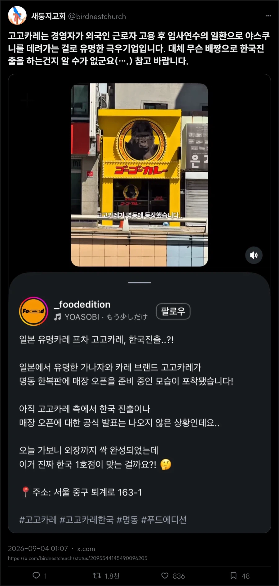
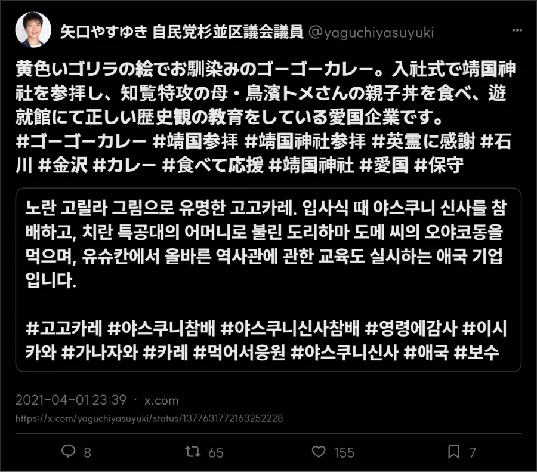

사장이 찐 극우임


사장이 찐 극우임
사실로 판명났는데 이제 어쩔래? ㅋㅋㅋㅋㅋㅋ 팩폭당하고 도망침 ㅇㄷ
넘 머라 하지마 확인안된상태로 욕만하는사람 한가득인데
확인 좀 해보자하는게 뭐라할 일이니
ㅇㄷ
요즘 일본에서 유명한 제품이나 프랜차이즈들 한국에서 짭으로 엄청 활개치고 다녀서 저거도 알고보면 '우리는 모르는 일이다' 엔딩 나오는거 아니냐?
한국에 같은 프랜차이즈이름으로 들어온 짭이 있음??
집에서 한솥끓인카레 학창시절, 군대밥으로 카레 먹고 자라니 카레는 밖에서 사먹기 참 뭔가 애매해 이 돈내고 왜 밖에서 카레를 먹나 싶고
인도카레야 맛이다르니 먹을만한데
일식카레는 3분카레 따잇해야해서 빡셈
근데 맛은 있어서 집 근처에 있으면 난 갈 듯
가고 싶다..
이런 원종이들한텐 ‘오히려 좋아’인가?
매장 자체가 되게 작은데… 1호점치고는..?
고고카레 창업자이자 전 대표인 미야모리 히로카즈가 과거 본인 블로그에 「야스쿠니 신사 만세!!」라는 글을 올린 기록이 있음.
고고카레 직원들과 야스쿠니 신사를 참배하고 유슈칸을 관람했으며, 직원들에게 다모가미 도시오 관련 DVD를 시청하게 했다는 내용도 직접 적어놨음.
그 외에도
유슈칸에는 학교에서 가르쳐주지 않는 진실이 있다는 취지의 발언
야스쿠니에 가보지도 않고 반대해선 안 된다는 취지의 발언
총리와 각료가 야스쿠니를 참배하지 않는 것을 비판
일본인이라면 1년에 한 번은 참배해야 한다는 주장
앞으로도 회사 차원에서 계속 참배하겠다는 내용
등이 있어서 창업자가 강한 우익·국가주의적 성향을 보였다는 얘기 자체는 근거가 있음.
다만 현재 대표이사는 미야모리가 아니라
'니시하타 마코토' 라는 사람이고, 2023년부터 대표를 맡고 있음.
내가 찾아본 범위에서는 니시하타 마코토가 저런 정치적 발언이나 행동을 했다는 근거는 확인되지 않았음.
그래서 "창업자 미야모리가 강한 우익 성향을 보였다"는 건 근거가 있지만, 그걸 그대로 현재 경영진까지 연결해서 "지금도 극우 기업이다"라고 단정하는 건 별개의 문제인 듯.
참고로 현재 대표이사인 니시하타의 이력은
Yahoo → Apple → Google → Mercari → DoorDash/Wolt 등 IT업계 경력이고,
2023년 1월 고고카레에 입사한 뒤 2023년 3월 CEO 겸 대표이사 사장에 취임한 사람임
그래도 관계를 완전히 청산하지 않은 이상(지분이라던가) 어쨋든 창업자 주머니에 들어가겠네
ㅇㅇ 맞아 찾아본 바에 따르면
창업자 미야모리가 회사에서 완전히 손을 뗀 것도 아님.
대표이사에서 물러난 뒤 이사회 회장으로 이동했고, 적어도 2025년까지 회장직을 유지한 자료가 확인됨.
현재 개인 지분율은 비상장사라 공개자료만으론 확인하기 어렵긴 함.
결론적으로
과거 고고카레가 회사 차원에서 우익·국가주의적이라고 평가받을 만한 행동을 했다는 것은 근거가 있음.
하지만 현재 대표인 니시하타가 같은 정치적 성향을 가지고 있다거나,
현재도 회사 차원에서 그런 활동을 계속하고 있다는 근거는 확인되지 않음.
그래서 과거 행적을 근거로 고고카레를 우익 성향의 기업이라고 평가하는 것까지는 이해할 만하지만,
현재도 똑같은 성향과 활동을 유지하는 '극우 기업'이라고 단정하려면 추가적인 근거가 필요해 보인다. 정도
그렇게 말하려면 극우 창업주가 지분을 다 매각하고 경영 일선에서 물러나서 현재는 야스쿠니 신사 참배를 가지 않는다는 증거가 있어야지
이해는 하는데
간다는 증거나 증언이 나온것도 아니니 그 사실 자체에 대해선 알수없음. 이 맞는거같고
한국에 진출하는데 있어서 부정적인 이미지가 생기는건 자연스러운 현상인듯
창업자가 지분을 아직도 하나도 안가지고 있을거라는 보장이 있음? 저 기업자체가 한국에 진출하여 잘된다면 창업자는 여전히 더 돈을버는구조가 되는건데 그게 용납이 될거라고 생각하는거임? 그냥 단순하게 ceo는 돈받고 일하는 사람임 전문경영인인거지 회사의 주인은 아님 뭐 창업자라고 회사의 주인은 아니겠지만 누구보다 많은 지분을 가지고있을수도 있는거고 한국에 그런식으로의 경영을 하고싶으면 최소한의 사과라도 해야지 과거에 무슨일이 있었어도 경영인이 바뀌었으니 우리는 새로운 기업입니다! 가 된다고 생각하는거?
1. '창업자가 지분을 아직도 하나도 안가지고 있을거라는 보장이 있음?' > 알수없다고 했지 안 가지고 있다고 한 적 없음
2. '한국에 그런식으로의 경영을 하고싶으면 최소한의 사과라도 해야지' > 나도 동감하는 부분
3. '경영인이 바뀌었으니 우리는 새로운 기업입니다! 가 된다고 생각하는거?' > '창업자와 현재 회사를 완전히 분리할 수 없다' 고 말하는 데까지는 일리가 있고, 동감하는 부분. 하지만,
'그러므로 현재도 극우 기업임' 이라고 한다면 그 부분은 별도의 현재 근거가 필요하다는 뜻이엇음.
ㄹㅇㅋㅋ 왜 이렇게 무리수를 두면서까지 옹호하려는지 모르겠네
내말 그말 ㅋㅋㅋ 경영인이 바뀌었다고 그 전통이 사라졋을거라고 보장하는가? 장담할수없음
당장 그 누구도 지금 저 기업의 입사교육을 겪어본적없기때문 ㅋㅋㅋ 그런게뉴스에뜨지도않고
당장 우리나라에 저 카레집이 아니더라도 당장 일식카레 맛있게하는집 많은데 굳이 소비해줄이유도없고 ㅋㅋㅋ
회사 차원의 행적에 문제가 있었다는 건 앞에서도 인정했고. 지금도 인정함.
딱히 옹호하려는 게 아니라,
극우라는 프레임부터 씌우기보다는
과거 행적과 현재 상황을 구분해서 사실관계를 확인해보려는 거였음.
개드립에선 그런거 없음 ㅋㅋㅋ 흑백논리 없인 살아갈 수 없는 애들임
사실관계는 중요한건데 ㅜ
과거 행적을 사과한 적 없다는 사실은 안중요함?
현 대표가 1월 입사했는데 3월에 대표이사 취임이라
쓰면서 이상한거 못느낌?
애초에 회장이랑 둘이 오랜 친구임
바지사장으로 추측되는게
경영 일선에서 물러났다면서 뭐 신메뉴 출시나 새로운 지점 낼때
대표이사 물러나기 전과 같이 항상 얼굴 들이대고 있기도하고
창업주가 대표이사 물러난 후
다른 상장사 지분 사서 대표이사가 되었는데
오퍼링 털어먹기 하다 잘렸음
+그리고 신입사원들 대상 야스쿠니 참배하는 건 여전히 함
현재도 명백한 극우기업 맞다.
매체 문식성에 있어 비판적인 태도는 좋은데
계속 웹서핑하면서 알게되는 내용을 취사선택해서 갖다붙이는 건 자기 합리화 하려는 태도로밖에 안보임
조금만 찾아봐도 현대표와 창립자가 오랜 절친이고, 창립자가 다른 회사 한탕해먹으려다 걸린거 나오는데
극우기업 팩트체크 완료했네ㅋㅋㅋ 이제 아무 말 못할 듯
https://jp.investing.com/news/stock-market-news/article-672458
찾아봤는데 진짜네.
처음엔 창업자 개인의 성향 >현 대표는 다른 사람 > 현재 기업과 분리해서 봐야 함에 무게를 뒀는데,
더 파보니 회사 차원의 활동이었고,
창업자가 대표직만 내려놓았을 뿐 회장으로 남아 영향력을 유지한 정황도 상당했음.
그래도 여전히 야스쿠니 참배를 '현재도' 하고 있다는 정보는 아직 못찾았는데
링크가 있다면 알려줬음 좋겠음. 나도 확인해보고 싶어서
합리화 하려던 건 아니고, 내가 알고 있던 정보가 부족해서 사실관계를 제대로 파악하지 못했던 것 같음.
더 찾아보니 처음 생각과는 다른 부분들이 꽤 있었고.
사실관계가 중요하다던 내가 스스로 발목을 잡은 꼴이 되어서 반성함
과거 행적에 대해 사과한 적도 없는데 왜 세탁기 돌려주는건지 이해안감 ㄹㅇㅋㅋ
수상할정도로 달려드는 애들보면 정사판이더라 ㅋㅋ
일반적으로는 창업주이자 얼마전까지 운영하던 사람이 A한 행보를 개인 및 회사차원에서 보였고, 새로온 대표가 그것과 선을 긋는다거나 부정하는 행보를 보이지 않는다면 그 회사는 동일한 행보를 보이거나, 아무리 보수적으로 얘기한다고 해도 부정하지 않는-수용하는 행보를 보인다고 생각하지 개붕이처럼 적극적으로 다르다 는 생각을 하진 않지.
왜 그렇게까지 전대표와 지금 대표를 분리해야만하는지는 모르겠는데, 적어도 개붕이가 그렇게 얘기하는 팩트체크도 하기 전에 왜 같은회사 심지어 대표가 오래전에 바뀌지도 않았는데 어떻게든 분리하려는게 더 이상해보이긴 함
대표가 바뀌었으니 아예 다른 기업이라는 취지는 아니었고,
현 이사 체제에서도 과거와 같은 행적을 보이고 있다는 근거가 있는지 확인해보자는 취지였음.
보는 입장에서는 내가 일방적으로 쉴드 치려는 것처럼 보였을 수도 있겠지만,
요즘 커뮤니티에서 사실관계 확인보다 특정 프레임이 먼저 씌워지는 경우가 많다고 느껴서
좀 더 명확하게 확인해보고 싶었던 거임.
결과적으로 더 찾아보니 내가 몰랐던 정황들이 있었고,
처음부터 정보가 부족한 상태에서 너무 적극적으로 분리해서 본 게 스스로 발목을 잡은 셈이고 반성하고 있음
니는 이제부터 원종이여
여기 노래가 중독성 넘치는데
근데 개맛있음
얇은 돈까스 토핑 추천함
인터넷에서나 극우 운운하지 현실은 인스타 흐름 한번 타면 하루종일 만석일 건데 ㅋㅋㅋㅋㅋ 열심히 성내 봐라
섹1스쿠니 ㅋㅋㅋ
정작 저거 비판하는 새둥지교회 저기는 림버스 컴퍼니 원화가 남혐 사건 때부터 40대냐냐체넷카마남페미로 악명높은 김환민이랑 붙어먹고 프문 욕하고 스튜디오 뿌리 사태 때는 뿌리 옹호하면서 넥슨 욕하던 옳그떠사이비 교회인게 웃기네
저기 나름 맛잇음
마치 중국에서 장사하는 정용진아님?
그렇게 막 드라마틱 하게 맛있진 않던데
오히려 좀 짠편이였던 기억..
뭐 개인 취향차이겠지만 난 코코 이치방이 더 낫다고 생각함
ㅇㅇ 맞아 찾아보니 진짜 있네. 내가 잘 몰랐음
근데 저 대표랑 현 대표는 달라서
극우 기업이 한국에 진출하는 느낌은 아님.
니시하타 마코토가 극우성향의 발언이나 행동을 했다는 근거는 난 아직 못찾음